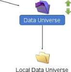
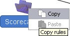

Publishing
The publishing mechanism allows for the sharing of components between folders within a Solution boundary – for example definitions of data models and layouts can be located in a folder and published for use within other parts of the Solution – but not within other Solutions.
Without the publishing capability the user would need to re-create the components in multiple folders, duplicating effort and components in order to use the definitions throughout the Solution.
The publishing mechanism is activated from any folder in the Explorer window. It is this folder that is known as the 'source' folder and contains the components that will be published to other folders. The mode chosen (Outbound/Inbound) will determine how the folders are displayed. When the Outbound mode is selected the editor will display the folders to which the content of the source file has been published. When the Inbound mode is selected the editor will display those folders whose contents have been published to the source folder.
Publishing can be carried out in two forms:
- Direct
- Hierarchical
Direct publishing is illustrated in the editor by a blue folder, either  or . This shows that publishing has been carried out between folders.
or . This shows that publishing has been carried out between folders.
Hierarchical publishing is illustrated in the editor by a green folder, either  or . This shows that publishing has been carried out between parent and child folders. If a child folder or parent folder is added where hierarchical publishing has already been carried out, the hierarchical publishing will automatically be applied to the new folder.
or . This shows that publishing has been carried out between parent and child folders. If a child folder or parent folder is added where hierarchical publishing has already been carried out, the hierarchical publishing will automatically be applied to the new folder.
|
Folder A contains a logical data source that contains generic application characteristics, folder B will be where the scorecards are created and folder C where the segmentation rules will be created. By publishing from the source folder, (folder A) to folder B and C, the scorecards and segmentation rules can be built using the characteristics defined in folder A. Publishing folder B to folder C enables the segmentation rules to be used to define the scorecard. |
Any amendments made to the original component will automatically be updated to the published instances of the component throughout the solution without the user needing to carry out any further action.
When folders that have been moved to the Recycle Bin contain publishing rules, these publishing rules will be maintained. This means that the user is still able to edit the publishing rules for these folders in the Publishing editor.
The publishing mechanism will only be available to those users who have the appropriate access rights.
When Publish is selected from the Explorer window the Publishing editor is opened along with the Publishing Inventory window.

Publishing Editor - enables the user to define specifically which folders to publish to and provides a graphical representation of the current publishing rules for the folder that is selected.
Publishing Inventory window - provides a summary of the publishing rules that have been carried out throughout the whole system.
Folders are used to provide an organisational structure for the components contained in the solution. Folders are stored in the shared area and displayed in the Explorer window.
Folders can be published. The publishing mechanism allows for the sharing of components between folders within the solution boundary, for example; definitions of data models and layouts can be located in a folder and published for use within other parts of the solution, but not within other solutions.
Without the publishing capability the user would need to re-create the components in multiple folders, duplicating effort and components in order to use the definitions throughout the solution.
The publishing mechanism is activated from any folder within the Explorer window. This folder is known as the source folder and contains the components that will be published to other folders.
|
Folder A contains a logical data source that contains generic application characteristics, folder B will be where the scorecards are created, and folder C will be where the segmentation rules will be created. By publishing from the source folder (folder A) to folders B and C, the scorecards and segmentation rules can be built using the characteristics defined in folder A. Publishing folder B to folder C enables the segmentation rules to be used to define the scorecard. |
Any amendments made to the original component will automatically be updated to the published instances of the component throughout the solution without the need for any further action.
The publishing mechanism will only be available to those users who have the appropriate access rights.
When Publish is selected from the Explorer window the Publishing editor is opened along with the Publishing Inventory window.
The publishing mechanism allows for the sharing of components between folders within the Solution boundary, but not within other Solutions. The publishing mechanism is activated from any folder in the Explorer window. It is this folder that is known as the 'source' folder and contains the components that will be published to other folders.
To publish to parent or child folders
- In the Explorer window, right-click on the folder that you wish to publish and Select Publish.
The system will open the Publishing editor with the source folder highlighted as follows:
The Publishing Inventory window for the whole solution will also be open. - Ensure that the
 option in the tool bar is selected.
option in the tool bar is selected. - Click on the source folder.

- Depending on the structure of your system either one or two green arrows will be displayed.
- Select the "up" arrow to publish to all the parent folders of the source folder or select the "down" arrow to publish to all the child folders of the source folder.
- Continue publishing to the folders you require.
- Click the
 icon to check the validity of the publishing rules you have made.
icon to check the validity of the publishing rules you have made. - Click the
 icon to apply these rules to the solution.
icon to apply these rules to the solution.


The publishing rules and Publishing Inventory window will be updated.
The publishing mechanism allows for the sharing of components between folders within the Solution boundary, but not within other Solutions. The publishing mechanism is activated from any folder in the Explorer window. It is this folder that is known as the 'source' folder and contains the components that will be published to other folders.
To publish to another folder
- In the Explorer window, right-click on the folder that you wish to publish and Select Publish.
The system will open the Publishing editor with the source folder highlighted as follows:Double clicking on a "normal" folder will alter the state of the folder to being the source folder. - The Publishing Inventory window for the whole solution will also be open.
- Ensure that the option in the tool bar is selected.
- Click on the folder where you wish the contents of the source folder to be published. A blue arrow will be displayed with a tool tip confirming to you where the publishing is going to take place.
Click on the blue arrow. The folder will change to illustrate that the contents of the source folder have been published to this folder.

- Continue publishing to the folders you require.
- Click the icon to check the validity of the publishing rules you have made.
- Click the icon to apply these rules to the solution.
The publishing rules and Publishing Inventory window will be updated.
The publishing mechanism allows for the sharing of components between folders within the Solution boundary, but not within other Solutions. The publishing mechanism is activated from any folder in the Explorer window. It is this folder that is known as the 'source' folder and contains the components that will be published to other folders.
To copy the published contents from one folder to another folder
- In the Publishing editor, select the mode you require, either Outbound or Inbound from the Publishing editor tool bar.
- Right click on the folder whose contents you wish to copy and select Copy.

- Right click on the folder where you wish the rules to be published and select Paste.
- Depending on the mode you have selected either the outbound publishing rules or the inbound publishing rules will be pasted into the folder you have selected.
- Click on the icon to check the validity of the publishing rules you have made.
- Click on the icon to apply these rules to the solution.
The publishing rules and Publishing Inventory window will be updated.
The publishing mechanism allows for the sharing of components between folders within the Solution boundary, but not within other Solutions. The publishing mechanism is activated from any folder in the Explorer window. It is this folder that is known as the 'source' folder and contains the components that will be published to other folders.
To remove/unpublish the rules from a selected folder
- In the Explorer window, select the mode you require, either Outbound or Inbound from the Publishing editor tool bar.
- Right-click on the folder whose contents you wish to remove and select Unpublish.
The rules for this folder for the mode you have selected will be removed. - Click the icon to check the validity of the publishing rules you have made.
- Click the icon to apply these rules to the solution.
The publishing rules and Publishing Inventory window will be updated.
All the publishing rules can be removed for a selected source folder.
To remove the rules for a source folder
- In the Explorer window, right-click on the folder whose rules you wish to amend and select Publish.
- Click on the
 icon.
icon. - The system will display a confirmation dialog.
- Click on the Yes button.

{kind=link}
{kind=link}
{kind=link}
{kind=link}
{kind=link}
All the publishing rules for the currently selected source folder will be deleted.
The publishing mechanism allows for the sharing of components between folders within the Solution boundary, but not within other Solutions. The publishing mechanism is activated from any folder in the Explorer window. It is this folder that is known as the 'source' folder and contains the components that will be published to other folders.
To change which folder is the source file
- With the Publishing editor open, locate the folder which you wish to change to be the source file.
- Double click on this folder.
If any publishing rules have been modified the system will display a confirmation dialog, asking if you would like the rules applied. - Click on the Yes button to apply the changes, click on the No button to discard the changes.
The folder will change to become the source folder.
{kind=link}
The colours of the folders displayed in the editor will change to reflect the change.